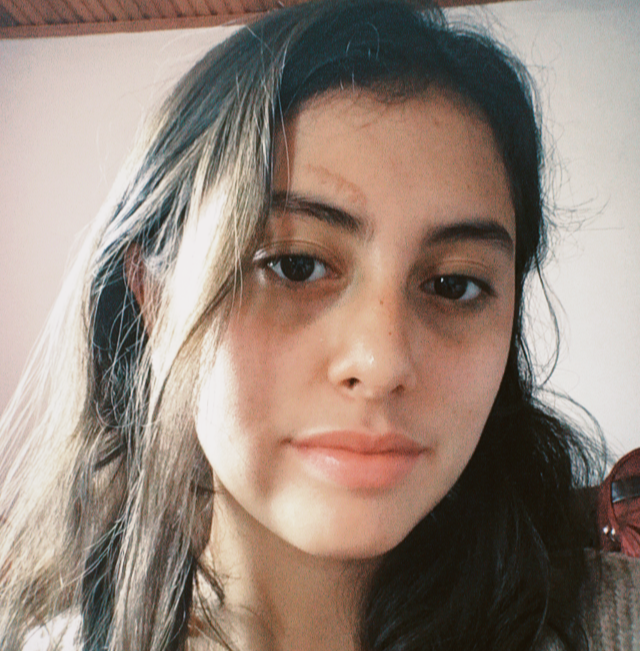

Sara Juliana Wilches Solano
Estudiante
Soy estudiante de Ingenieria en Multimedia, interesada en la produccion, planeacion y ejecucion de contenidos tanto digitales como fisicos, deseo proyectar mis ideas gracias a mi formacion interdisciplinaria y con gran creatividad y disciplina desarrollar proyectos.
⭒⭒⭒⭒PERFIL PROFESIONAL⭒⭒⭒⭒
Estudiante de Ingenieria en Multimedia con conocimientos de:
✬Ingles solido ✬Manejo de la plataforma Procreate
Desde primer semestre he logrado mantener una beca, a su vez disfruto las actividades complementarias a la universidad, como lo son talleres de arte, grupos musicales o escuelas deportivas
⭒⭒⭒⭒INTERESES⭒⭒⭒⭒
✬Dibujo(digital,artístico,experimental...)
✬Musica
✬Pintura
✬Lectura de comics
✬Fotografia y edición
⭒⭒⭒⭒IDIOMAS⭒⭒⭒⭒
✬Español
✬Ingles
⭒⭒⭒⭒SOFTWARE⭒⭒⭒⭒
✬Procreate
✬Adobe Ilustrator
✬Apache NetBeans
✬Eclipse
⭒⭒⭒⭒HABILIDADES⭒⭒⭒⭒
✬ Adaptvilidad
✬ Creatividad
✬ Trabajo en equipo
✬ Puntualidad
✬ Alto nivel de inglés
⭒⭒⭒⭒EDUCACIÓN⭒⭒⭒⭒
Ingenieria en Multimedia en proceso
Universidad de Boyaca,Tunja,Boyaca
⭒⭒⭒⭒REDES SOCIALES⭒⭒⭒⭒
Instagram: saraj_ws